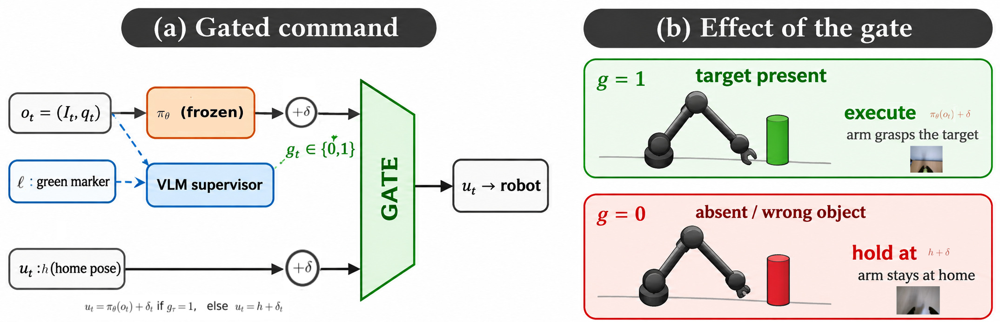
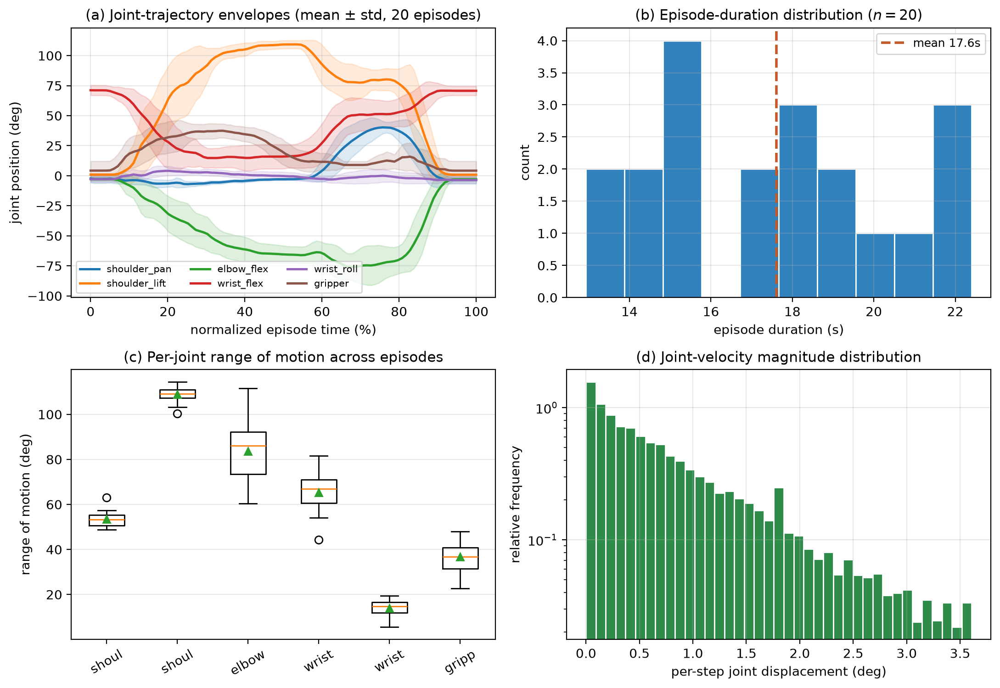

We add language-conditioned object selection to a frozen imitation policy — no retraining, no extra demonstrations. A vision-language model watches in parallel and decides whether to act; the policy decides how.
75 real-robot trials with upright, slip-prone markers. The system never grasped the wrong color; every failure was a physical slip, not a selection error. A held-out frame test isolates the supervisor and confirms perfect detection.
Selection is solved. Zero wrong-color grasps across all 75 trials, and the supervisor scores perfect precision/recall on 50 held-out frames — including frames with blue and pink distractors but no green.
Failures are mechanical. The remaining errors are the policy dropping the upright marker in transport or at grasp — a low-level grasp-reliability limit of a 20-demo policy, not a supervision error.

| Setting | Trials | Success | Transport slip | Grasp slip | Wrong color | Selection acc. |
|---|---|---|---|---|---|---|
| ACT only (baseline) | — | non-selective — grasps any color | — | |||
| Single target | 50 | 27 (54%) | 10 (20%) | 13 (26%) | 0 | — |
| 3-color select | 25 | 13 (52%) | 7 (28%) | 5 (20%) | 0 | 100% |
All failures are physical slips; zero are selection errors. The unsupervised baseline has no way to choose a color.
| Target | Present | Absent | Precision | Recall | F1 | Accuracy |
|---|---|---|---|---|---|---|
| green marker | 25 | 25 | 1.00 | 1.00 | 1.00 | 1.00 |
“Absent” frames contain blue/pink distractor markers but no green, so zero false positives reflects genuine color selectivity, not empty-scene rejection.
Three representative trials on the real SO-ARM101. Upload the clips to videos/ with the filenames shown; each slot shows a placeholder until the file is present.
Three markers on the table, target set to “green” — the arm picks only the green one and then waits at home, leaving the blue and pink markers untouched.
The arm grasps the green marker. When a second, non-green marker is added, the gate stays closed — the arm waits at home and leaves it untouched.
Green, then the other two colors requested in turn — the arm selects and picks each target successfully, one after another.
Keep each clip under 100 MB (GitHub's per-file limit). MP4 (H.264) at 720–1080p works well.
A fixed policy provides the skill; a VLM supervisor provides selection. Given a run-time target (e.g. “green marker”), the supervisor emits a binary gate — act when present, hold at home otherwise.
An ACT policy trained from 20 demonstrations maps image + joint state to action chunks at 30 Hz. It is never retrained; it has no notion of object identity.
Cosmos3-Nano answers “is the target present?” on shared frames at ~1–2 Hz. The target is a run-time string, so retargeting needs no retraining.


The entire system is deployed from 20 teleoperated episodes — 10,566 frames at 30 fps. The policy learns only the physical skill, with no object or language labels; all selectivity is added later by the supervisor.


Links are placeholders — point them at your releases.
The frozen policy from 20 demonstrations, with the LeRobot pre/post-processors.
20 episodes · 10,566 frames @ 30 fps · 640×480 wrist camera + 6-DoF state. LeRobot format.
Full method, implementation details, configuration, results and limitations.
@inproceedings{sanaullah2026vlmsupervised,
title = {Asynchronous Language-Conditioned Object Selection for
Imitation Policies via a VLM Supervisor},
author = {Sanaullah},
booktitle = {Preprint},
year = {2026}
}